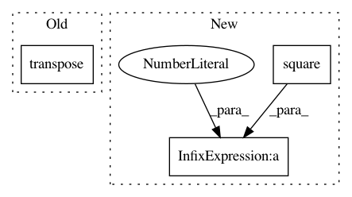

57a645b87e8fa84cc7161ea7c83f5e3bca4e529e,GPflow/svgp.py,SVGP,build_likelihood,#SVGP#,46
Before Change
else:
for d in range(self.num_latent):
L = tf.user_ops.triangle(self.q_sqrt[:,:,d], "lower")
S = tf.matmul(L, tf.transpose(L))
KL -= tf.reduce_sum(tf.log(tf.user_ops.get_diag(L)))
KL += 0.5*tf.reduce_sum(S * K_inv)
fmean, fvar = conditionals.gaussian_gp_predict(self.X, self.Z, self.kern, self.q_mu, self.q_sqrt, self.num_latent)
After Change
Lq = tf.user_ops.triangle(self.q_sqrt[:,:,d], "lower")
KL -= tf.reduce_sum(tf.log(tf.user_ops.get_diag(Lq)))
LiLq = tf.user_ops.triangular_solve(L, Lq, "lower")
KL += 0.5*tf.reduce_sum(tf.square(tf.user_ops.get_diag(LiLq)))
fmean, fvar = conditionals.gaussian_gp_predict(self.X, self.Z, self.kern, self.q_mu, self.q_sqrt, self.num_latent)
//add in mean function:
In pattern: SUPERPATTERN
Frequency: 3
Non-data size: 3
Instances
Project Name: GPflow/GPflow
Commit Name: 57a645b87e8fa84cc7161ea7c83f5e3bca4e529e
Time: 2016-01-19
Author: james.hensman@gmail.com
File Name: GPflow/svgp.py
Class Name: SVGP
Method Name: build_likelihood
Project Name: GPflow/GPflow
Commit Name: 8d9d4599a79f86f53117bbe6b3aa17a91b15f98f
Time: 2016-04-13
Author: james.hensman@gmail.com
File Name: GPflow/sgpr.py
Class Name: GPRFITC
Method Name: build_likelihood
Project Name: GPflow/GPflow
Commit Name: b3dab0288ddcd165e2ba6f95061b5f3d7bf82a1a
Time: 2016-08-10
Author: james.hensman@gmail.com
File Name: GPflow/vgp.py
Class Name: VGP
Method Name: build_predict